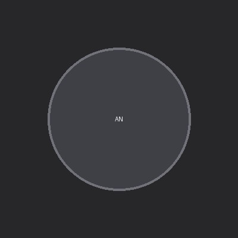

Artificial intelligence
How intelligent systems learn, reason, represent information and make decisions.
↗I am currently pursuing a BS degree in Data Science and Applications at IIT Madras. I am in the first term of the Diploma level.

ASHIRBAD BHANJADEO
MY LEARNING JOURNEY
A simple place to share what I study, what I discover and what I build along the way.
01 / THE PERSON
Learning in public. Building with purpose.
ASHIRBAD · DATA SCIENCE STUDENT
I’m currently pursuing the BS in Data Science and Applications at IIT Madras. I enjoy understanding ideas from first principles — especially when mathematics, computation and real-world problems meet.
This website is my notebook on the internet: a place to make my thinking clearer, share useful discoveries and keep track of my progress.
02 / QUESTIONS I FOLLOW
Areas I’m exploring — not claims of expertise.
How intelligent systems learn, reason, represent information and make decisions.
↗Probability, statistics, linear algebra and optimisation behind modern AI.
↗Finding patterns, relationships and anomalies in complex, connected datasets.
↗03 / THINGS I MAKE
Small experiments are the beginning of bigger ideas.
An exploration of how large datasets can be connected, searched and analysed to surface similarities, relationships and anomalies.
A small simulation project for generating synthetic track and sensor-like data to explore data pipelines and analysis.
This space is reserved for the next question that turns into a working prototype.
Project descriptions are starting points. Update each entry as the work develops, and link to its code or documentation when available.
04 / NOTES & IDEAS
Learning becomes clearer when you try to explain it.
Starting with simple examples to understand how probability helps us reason about events we cannot predict with certainty.
Develop this note ↗A first-principles look at learning from data, model parameters, objectives and generalisation.
Develop this note ↗A practical log of turning a question into a small experiment, learning from mistakes and improving the result.
Develop this note ↗These are starter topics, not published articles. Replace them with your own writing when ready.
05 / RIGHT NOW
A snapshot of the present.
Strengthening foundations in mathematics, probability, statistics and Python.
Understanding machine learning, AI research and data-intensive systems.
Turning ideas into small, testable software projects and documenting the process.
LAST UPDATED: NOVEMBER 2026 — EDIT THIS WHEN YOUR FOCUS CHANGES
06 / SAY HELLO
Open to thoughtful conversations, learning together and exchanging ideas about AI, data and technology.
1bhanjadeoashirbad@gmail.com ↗